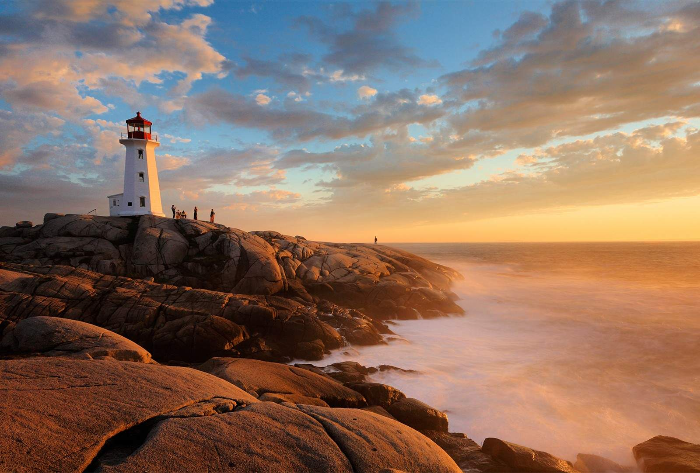
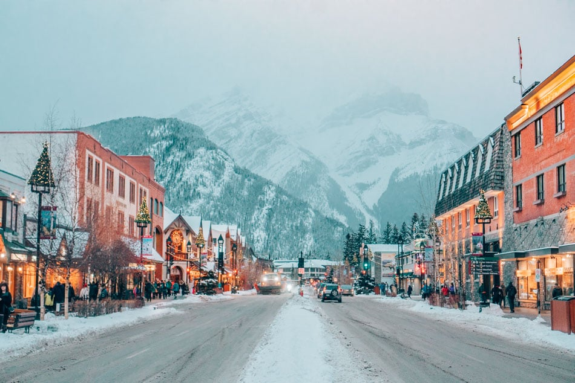

This is a beautiful image of a lake in Jasper Park when the sun is setting
 https://thecanadaguide.com/places/atlantic-canada/This is a rocky shore that overlooks the Antlantic ocean during a sunset.
 https://practicalwanderlust.com/things-to-do-in-banff-winter/This is a small town in Canada called "Banff" while its snowing